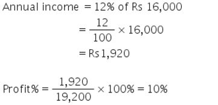
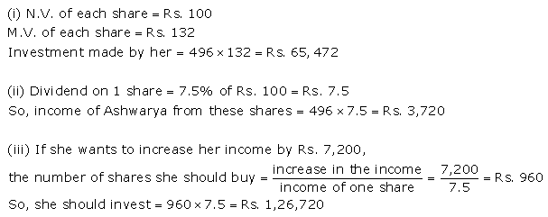
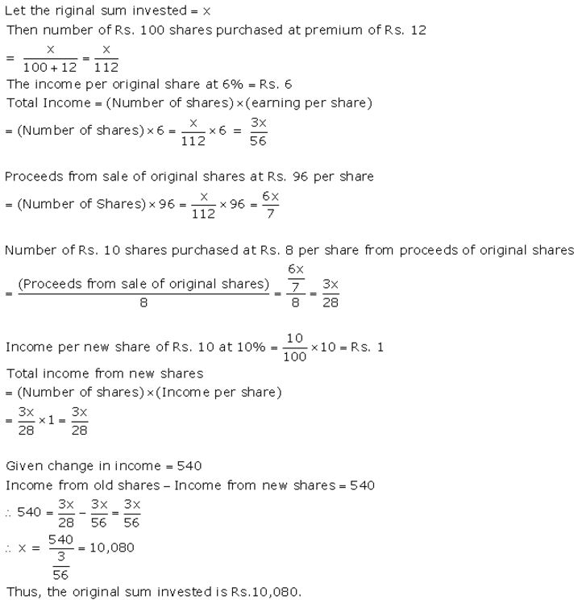

How much money will be required to buy 400, ₹ 12.50 shares at a premium of ₹ 1?
Solution:

Question 1.
How much money will be required to buy 400, ₹ 12.50 shares at a premium of ₹ 1?
Solution:
Question 2.
How much money will be required to buy 250, ₹ 15 shares at a discount of ₹ 1.50?
Solution:
Question 3.
A person buys 120 shares at a nominal value of ₹ 40 each, which he sells at ₹ 42.50 each. Find his profit and profit percent.
Solution:
Nominal value of 120 shares = ₹ 40 × 120= ₹ 4,800
Market value of 120 shares = ₹ 42.50 × 120= ₹ 5,100
His profit = ₹ 5,100 – ₹ 4,800 = ₹ 300
profit = \(\frac { 300 }{ 4800 }\) × 100% = 6.25%
Question 4.
Find the cost of 85 shares of ₹ 60 each when quoted at ₹ 63.25.
Solution:
Market value of 1 share = ₹ 63.25
Market value of 85 shares = ₹ 63.25 × 85 = ₹ 5,376.25
Question 5.
A man invests ₹ 800 in buying ₹ 5 shares and when they are selling at a premium of ₹ 1.15, he sells all the shares. Find his profit and profit percent.
Solution:
Nominal value of 1 share = ₹ 5
Market value 1 share = ₹ 5 + ₹ 1.15 = ₹ 6.15
Total money invested = ₹ 800
No of shares purchased = \(\frac { 800 }{ 5 }\) = 160
Market value of 160 shares = 160 × 6.15= ₹ 984
His profit = ₹ 984 – ₹ 800 = ₹ 184
profit = \(\frac { 184 }{ 800 }\) × 100% = 23%
Question 6.
Find the annual income derived from 125, ₹ 120 shares paying 5% dividend.
Solution:
Nominal value of 1 share = ₹ 60
Nominal value 250 shares= ₹ 60 x 250= ₹ 15,000
Dividend = 5% of ₹ 15,000
= \(\frac { 5 }{ 100 }\) × 15,000 = ₹ 750
Question 7.
A man invests ₹ 3,072 in a company paying 5% per annum, when its ₹ 10 share can be bought for ₹ 16 each. Find :
(i) his annual income
(ii) his percentage income on his investment.
Solution:
Market value of 1 share = ₹ 16
Nominal value of 1share = ₹ 10
Money invested = ₹ 3,072
Question 8.
A man invests ₹ 7,770 in a company paying 5% dividend when a share of nominal value of ₹ 100 sells at a premium of ₹ 5. Find:
(i) the number of shares bought;
(ii) annual income;
(iii) percentage income.
Solution:
Total money invested = ₹ 7,770
Nominal value of 1 share = ₹ 100
Market value of 1 share = ₹ 100 + ₹ 5 = ₹ 105
Question 9.
A man buys ₹ 50 shares of a company, paying 12% dividend, at a premium of ₹ 10. Find:
(i) the market value of 320 shares;
(ii) his annual income;
(iii) his profit percent.
Solution:
Nominal value of 1 share = ₹ 50
Market value of 1 share = ₹ 50 + ₹ 10 = ₹ 60
Market value of 320 shares = 320 x 60 = ₹ 19,200
Nominal value of 320 shares = 320 x 5 = ₹ 16,000

Question 10.
A man buys ₹ 75 shares at a discount of ₹ 15 of a company paying 20% dividend. Find:
(i) the market value of 120 shares;
(ii) his annual income;
(iii) his profit percent.
Solution:
Nominal value of 1 share = ₹ 75
Market value of 1 share = ₹ 75 – ₹ 15 = ₹ 60
Market value of 120 shares = 120 × 60 = ₹ 7,200
Nominal value of 120 shares = 120 × 75 = ₹ 9,000
Question 11.
A man has 300, ₹ 50 shares of a company paying 20% dividend. Find his net income after paying 3% income tax.
Solution:
Nominal value of 1 share = ₹ 50
Nominal value of 300 shares = 300 × 50 = ₹ 15,000
Question 12.
A company pays a dividend of 15% on its ten-rupee shares from which it deducts income tax at the rate of 22%. Find the annual income of a man who owns one thousand shares of this company.
Solution:
Nominal value of 1 share = ₹ 10
Nominal value of 1000 shares = 1000 × 10 = ₹ 10,000
Question 13.
A man invests ₹ 8,800 in buying shares of a company of face value of rupees hundred each at a premium of 10%. If he earns ₹ 1,200 at the end of the year as dividend, find:
(i) the number of shares he has in the company.
(ii) the dividend percent per share.
Solution:
Total investment = ₹ 8,800
Nominal value of 1 share = ₹ 100
Market value of 1 share = ₹ 110
∴ No of shares purchased = \(\frac { 8800 }{ 110 }\) = 80
Nominal value of 80 shares = 80 × 100= ₹ 8,000
Let dividend% = y%
then y% of ₹ 8,000 = ₹ 1,200
⇒ \(\frac { y }{ 100 }\) × 8,000 = 1,200
⇒ y = 15%
Question 14.
A man invests ₹ 1,680 in buying shares of nominal value ₹ 24 and selling at 12% premium. The dividend on the shares is 15% per annum. Calculate:
(i) the number of shares he buys;
(ii) the dividend he receives annually.
Solution:
Nominal value of 1 share = ₹ 24
Market value of 1 share = ₹ 24+ 12% of ₹ 24
= ₹ 24+ ₹ 2.88= ₹ 26.88
Total investment = ₹ 1,680
∴ No of shares purchased = \(\frac { 1680 }{ 26.88 }\) = 62.5
Nominal value of 62.5 shares = 62.5 x 24= ₹ 1,500
Dividend = 15% of ₹ 1,500
= \(\frac { 15 }{ 100 }\) × 1,500 = ₹ 225
Question 15.
By investing ₹ 7,500 in a company paying 10 percent dividend, an annual income of ₹ 500 is received. What price is paid for each of ₹ 100 share ?
Solution:
Total investment = ₹ 7,500
Nominal value of 1 share = ₹ 100
No. of shares purchased = y
Nominal value of y shares = 100 x y = ₹ (100y)
Dividend% = 10%
Dividend = ₹ 500
Question 1.
A man buys 75, ₹ 100 shares of a company which pays 9 percent dividend. He buys shares at such a price that he gets 12 percent of his money. At what price did he buy the shares ?
Solution:
Question 2.
By purchasing ₹ 25 gas shares for ₹ 40 each, a man gets 4 percent profit on his investment. What rate percent is the company paying? What is his dividend if he buys 60 shares?
Solution:
Nominal value of 1 share = ₹ 25
Market value of 1 share = ₹ 40
Profit% on investment = 4%
Then profit on 1 share = 4% of ₹ 40= ₹ 1.60
∴ Dividend% = \(\frac { 1.60 }{ 25 }\) × 100% = 6.4%
No. of shares purchased= 60
Then dividend on 60 shares = 60 × ₹ 1.60 = ₹ 96
Question 3.
Hundred rupee shares of a company are available in the market at a premium of ₹ 20. Find the rate of dividend given by the company, when a man’s return on his investment is 15%.
Solution:
Nominal value of 1 share = ₹ 100
Market value of 1 share = ₹ 100 + ₹ 20 = ₹ 120
Profit% on investment of 1 share =15%
Then profit= 15% of ₹ 120 = ₹ 18
∴ Dividend% = \(\frac { 18 }{ 100 }\) × 100% = 18%
Question 4.
₹ 50 shares of a company are quoted at a discount of 10%. Find the rate of dividend given by the company, the return on the investment on these shares being 20 percent.
Solution:
Nominal value of 1 share = ₹ 50
Market value of 1 share = ₹ 50 – 10% of ₹ 50
= ₹ 50 – ₹ 5 = ₹ 45
Profit % on investment = 20%
Then profit on 1 share = 20% of ₹ 45 = ₹ 9
∴ Dividend% = \(\frac { 9 }{ 50 }\) × 100% = 18%
Question 5.
A company declares 8 percent dividend to the share holders. If a man receives ₹ 2,840 as his dividend, find the nominal value of his shares.
Solution:
Dividend% = 8%
Dividend = ₹ 2,840
Let nominal value of shares = ₹ y
then 8% of y = ₹ 2,840
⇒ \(\frac { 8 }{ 100 }\) × y = ₹ 2,840
⇒ y = ₹ 35000
Question 6.
How much should a man invest in ₹ 100 shares selling at ₹ 110 to obtain an annual income of ₹ 1,680, if the dividend declared is 12%?
Solution:
Nominal value of 1 share = ₹ 100
Market value of 1 share = ₹ 110
Let no. of shares purchased = n
Then nominal value of n shares = ₹ (100n)
Dividend% = 12%
Dividend = ₹ 1,680
Question 7.
A company declares a dividend of 11.2% to all its share-holders. If its ₹ 60 share is available in the market at a premium of 25%, how much should Rakesh invest, in buying the shares of this company, in order to have an annual income of ₹ 1,680?
Solution:
Nominal value of 1 share = ₹ 60
Market value of 1 share = ₹ 60+ 25% of ₹ 60
= ₹ 60 + ₹ 15 = ₹ 75
Let no. of shares purchased = n
Then nominal value of n shares = ₹ (60n)
Dividend% = 11.2%
Dividend = ₹ 1,680
Question 8.
A man buys 400, twenty-rupee shares at a premium of ₹ 4 each and receives a dividend of 12%. Find:
(i) the amount invested by him.
(ii) his total income from the shares.
(iii) percentage return on his money.
Solution:
Nominal value of 1 share = ₹ 20
Market value of 1 share = ₹ 20 + ₹ 4 = ₹ 24
No. of shares purchased = 400
Nominal value of 400 shares = 400 × 20 = ₹ 8,000
(i) Market value of 400 shares = 400 × 24 = ₹ 9,600
Question 9.
A man buys 400, twenty-rupee shares at a discount of 20% and receives a return of 12% on his money. Calculate:
(i) the amount invested by him.
(ii) the rate of dividend paid by the company.
Solution:
Nominal value of 1 share = ₹ 20
Market value of 1 share = ₹ 20 – 20% of ₹ 20
= ₹ 20 – ₹ 4 = ₹ 16
No. of shares purchased = 400
Nominal value of 400 shares = 400 x 20 = ₹ 8,000
(i) Market value of 400 shares = 400 x 16 = ₹ 6,400
(ii) Return%= 12%
Income = 12% of ₹ 6,400
Question 10.
A company, with 10,000 shares of ₹ 100 each, declares an annual dividend of 5%.
(i) What is the total amount of dividend paid by the company?
(ii) What should be the annual income of a man who has 72 shares in the company?
(iii) If he received only 4% of his investment, find the price he paid for each share.
Solution:
Nominal value of 1 share = ₹ 100
Nominal value of 10,000 shares = 10,000 x ₹ 100 = ₹ 10,00,000
(i) Dividend% = 5%
Dividend = 5% of ₹ 10,00,000
= \(\frac { 5 }{ 100 }\) × 10,00,000 = ₹ 50,000
(ii) Nominal value of 72 shares= ₹ 100 x 72 = ₹ 7,200
Dividend = 5% of ₹ 7,200
= \(\frac { 5 }{ 100 }\) × 7,200 = ₹ 360
(iii) Let market value of 1 share = ₹ y
Then market value of 10,000 shares = ₹ (10,000y)
Return% = 4%
then 4% of ₹ 10,000y = ₹ 50,000
⇒ \(\frac { 4 }{ 100 }\) × 10,000y = ₹ 50,000
⇒ y = ₹ 125
Question 11.
A lady holds 1800, ₹ 100 shares of a company that pays 15% dividend annually. Calculate her annual dividend. If she had bought these shares at 40% premium, what is the return she gets as percent on her investment. Give your answer to the nearest integer.
Solution:
Nominal value of 1 share = ₹ 100
Market value of 1 share = ₹ 100 + 40% of ₹ 100
= ₹ 100 + ₹ 40 = ₹ 140
No. of shares purchased = 1800
Nominal value of 1800 shares = 1800 × 100 = ₹ 1,80,000
Market value of 1800 shares= 1800 × 140 = ₹ 2,52,000
(i)Dividend% = 15%
Dividend = 15% of ₹ 1,80,000
Question 12.
A man invests ₹ 11,200 in a company paying 6 percent per annum when its ₹ 100 shares can be bought for ₹ 140. Find:
(i) his annual dividend
(ii) his percentage return on his investment.
Solution:
Nominal value of 1 share = ₹ 100
Market value of 1 share = ₹ 140
Total investment = ₹ 11,200
No of shares purchased = \(\frac { 11,200 }{ 140 }\) = 80 shares
Then nominal value of 80 shares= 80 × 100= ₹ 8,000
(i) Dividend% = 6%
Dividend = 6% of ₹ 8,000
Question 13.
Mr. Sharma has 60 shares of nominal value ₹ 100 and decides to sell them when they are at a premium of 60%. He invests the proceeds in shares of nominal value ₹ 50, quoted at 4% discount, and paying 18% dividend annually. Calculate :
(i) the sale proceeds
(ii) the number of shares he buys and
(iii) his annual dividend from the shares.
Solution:
1st case
Nominal value of 1 share = ₹ 100
Nominal value of 60 shares = ₹ 100 × 60= ₹ 6,000
Market value of 1 share = ₹ 100 + 60% of ₹ 100
= ₹ 100+ ₹ 60 = ₹ 160
Market value of 60 shares = ₹ 160 × 60 = ₹ 9,600 Ans.
(ii) Nominal value of 1 share = ₹ 50
Market value of 1 share= ₹ 50 – 4% of ₹ 50
= ₹ 50 – ₹ 2 = ₹ 48
No of shares purchased = \(\frac { 9,600 }{ 48 }\) = 200 shares
(iii) Nominal value of 200 shares = ₹ 50 × 200 = ₹ 10,000
Dividend% = 18%
Dividend = 18% of ₹ 10,000
= \(\frac { 18 }{ 100 }\) × 10,000 = ₹ 1800
Question 14.
A company with 10,000 shares of nominal value ₹ 100 declares an annual dividend of 8% to the share-holders.
(i) Calculate the total amount of dividend paid by the company.
(ii) Ramesh had bought 90 shares of the company at ₹ 150 per share. Calculate the dividend he receives and the percentage of return on his investment.
Solution:
(i) Nominal value of 1 share = ₹ 100
Nominal value of 10,000 shares = ₹ 100 × 10,000 = ₹ 10,00,000
Dividend% = 8%
Dividend = 8% of ₹ 10,00,000
= \(\frac { 8 }{ 100 }\) × 10,00,000 = ₹ 80,000
(ii) Market value of 90 shares = ₹ 150 × 90 = ₹ 13,500
Nominal value of 90 shares = ₹ 100 × 90 = ₹ 9,000
Dividend = 8% of ₹ 9,000
= \(\frac { 8 }{ 100 }\) × 9,000 = ₹ 720
Question 15.
Which is the better investment :
16% ₹ 100 shares at 80 or 20% ₹ 100 shares at 120?
Solution:
1st case
16% of ₹ 100 shares at 80 means;
Market value of 1 share = ₹ 80
Nominal value of 1 share = ₹ 100
Dividend = 16%
Income on ₹ 80= 16% of ₹ 100 = ₹ 16
Income on ₹ 1 = \(\frac { 16 }{ 80 }\) = ₹ 0.20
2nd case
20% of ₹ 100 shares at 120 means;
Market value of 1 share = ₹ 120
Nominal value of 1 share = ₹ 100
Dividend = 20%
Income on ₹ 120 = 20% of ₹ 100= ₹ 20
Income on ₹ 1 = \(\frac { 20 }{ 120 }\) = ₹ 0.17
Then 16% ₹ 100 shares at 80 is better investment.
Question 16.
A man has a choice to invest in hundred-rupee shares of two firms at ₹ 120 or at ₹ 132. The first firm pays a dividend of 5% per annum and the second firm pays a dividend of 6% per annum. Find:
(i) which company is giving a better return.
(ii) if a man invests ₹ 26,400 with each firm, how much will be the difference between the annual returns from the two firms.
Solution:
(i) 1st firm
Market value of 1 share = ₹ 120
Nominal value of 1 share = ₹ 100
Dividend = 5%
Income on ₹ 120 = 5% of ₹ 100 = ₹ 5
Income on ₹ 1 = \(\frac { 5 }{ 120 }\) = ₹ 0.041
2nd firm
Market value of 1 share = ₹ 132
Nominal value of 1 share = ₹ 100
Dividend = 6%
Income on ₹ 132 = 6% of ₹ 100 = ₹ 6
Income on ₹ 1 = \(\frac { 6 }{ 132 }\) = ₹ 0.045
Then investment in second company is giving better return.
(ii) Income on investment of ₹ 26,400 in fi₹ t firm
= \(\frac { 5 }{ 120 }\) × 26,400 = ₹ 1,100
Income on investment of ₹ 26,400 in second firm
= \(\frac { 6 }{ 132 }\) × 26,400 = ₹ 1,200
∴ Difference between both returns = ₹ 1,200 – ₹ 1,100 = ₹ 100
Question 17.
A man bought 360, ten-rupee shares of a company, paying 12% per annum. He sold the shares when their price rose to ₹ 21 per share and invested the proceeds in five-rupee shares paying 4.5 percent per annum at ₹ 3.50 per share. Find the annual change in his income.
Solution:
1st case
Nominal value of 1 share = ₹ 10
Nominal value of 360 shares = ₹ 10 × 360 = ₹ 3,600
Market value of 1 share = ₹ 21
Market value of 360 shares = ₹ 21 × 360 = ₹ 7,560
Dividend% = 12%
Dividend = 12% of ₹ 3,600
= \(\frac { 12 }{ 100 }\) × 3,600 = ₹ 432
2nd case
Nominal value of 1 share= ₹ 5
Market value of 1 share= ₹ 3.50
∴ No of shares purchased = \(\frac { 7,560 }{ 3.50 }\) = 2,160 shares
Nominal value of 2160 shares=₹ 5 × 2160= ₹ 10,800
Dividend%= 4.5%
Dividend= 4.5% of ₹ 10,800
= \(\frac { 4.5 }{ 132 }\) × 10,800 = ₹ 486
Annual change in income = ₹ 486 – ₹ 432
= ₹ 54 increase
Question 18.
A man sold 400 (₹ 20) shares of a company, paying 5% at ₹ 18 and invested the proceeds in (₹ 10) shares of another company paying 7% at ₹ 12. How many (₹ 10) shares did he buy and what was the change in his income?
Solution:
1st case
Nominal value of 1 share = ₹ 20
Nominal value of 400 shares = ₹ 20 x 400= ₹ 8,000
Market value of 1 share = ₹ 18
Market value of 400 shares = ₹ 18 x 400= ₹ 7,200
Dividend% = 5%
Dividend = 5% of ₹ 8,000
= \(\frac { 5 }{ 100 }\) × 8,000 = ₹ 400
2nd case
Nominal value of 1 share = ₹ 10
Market value of 1 share = ₹ 12
∴ No of shares purchased = \(\frac { 7,200 }{ 12 }\) = 600 shares
Nominal value of 600 shares = ₹ 10 x 600 = ₹ 6,000
Dividend% = 7%
Dividend = 7% of ₹ 6,000
= \(\frac { 7 }{ 100 }\) × 6,000 = ₹ 420
Annual change in income = ₹ 420 – ₹ 400
= ₹ 20 increase
Question 19.
Two brothers A and B invest ₹ 16,000 each in buying shares of two companies. A buys 3% hundred-rupee shares at 80 and B buys ten-rupee shares at par. If they both receive equal dividend at the end of the year, find the rate per cent of the dividend received by B.
Solution:
For A
Total investment = ₹ 16,000
Nominal value of 1 share = ₹ 100
Market value of 1 share = ₹ 80
∴ No of shares purchased = \(\frac { 16,000 }{ 80 }\) = 200 shares
Nominal value of 200 shares = ₹ 100 × 200 = ₹ 20,000
Dividend% = 3%
Dividend = 3% of ₹ 20,000
= \(\frac { 3 }{ 100 }\) × 20,000 = ₹ 600
For B
Total investment= ₹ 16,000
Nominal value of 1 share= ₹ 10
Market value of 1 share= ₹ 10
∴ No of shares purchased = \(\frac { 16,000 }{ 10 }\) = 1600 shares
Nominal value of 1600shares= 10 × 1600= ₹ 16,000
Dividend received by B = Dividend received by A = ₹ 600
Question 20.
A man invests ₹ 20,020 in buying shares of nominal value ₹ 26 at 10% premium. The dividend on the shares is 15% per annum. Calculate :
(i) the number of shares he buys.
(ii) the dividend he receives annually.
(iii) the rate of interest he gets on his money.
Solution:
Total investment = ₹ 20,020
Nominal value of 1 share = ₹ 26
Market value of 1 share = ₹ 26+ 10% of ₹ 26
= ₹ 26+ ₹ 2.60 = ₹ 28.60
∴ No of shares purchased = \(\frac { 20,020 }{ 28.60 }\) = 700 shares
Nominal value of 700 shares= ₹ 26 x 700 = ₹ 18,200
Dividend% = 15%
Dividend = 15% of ₹ 18,200
= \(\frac { 15 }{ 100 }\) × 18,200 = ₹ 2,730
Question 1.
By investing ₹ 45,000 in 10% ₹ 100 shares, Sharad gets ₹ 3,000 as dividend. Find the market value of each share.
Solution:
Question 2.
Mrs. Kulkarni invests ₹ 1, 31,040 in buying ₹ 100 shares at a discount of 9%. She sells shares worth Rs.72,000 at a premium of 10% and the rest at a discount of 5%. Find her total gain or loss on the whole.
Solution:
Question 3.
A man invests a certain sum on buying 15% ₹ 100 shares at 20% premium. Find :
(i) His income from one share
(ii) The number of shares bought to have an income, from the dividend, ₹ 6480
(iii) Sum invested
Solution:
Question 4.
Gagan invested ₹ 80% of his savings in 10% ₹ 100 shares at 20% premium and the rest of his savings in 20% ₹ 50 shares at ₹ 20% discount. If his incomes from these shares is ₹ 5,600 calculate:
(i) His investment in shares on the whole
(ii) The number of shares of first kind that he bought
(iii) Percentage return, on the shares bought on the whole.
Solution:
Question 5. A company pays a dividend of 15% on its ₹ 100 shares from which income tax at the rate of 20% is deducted. Find : Mr. Joseph sold some ₹ 100 shares paying 10% dividend at a discount of 25% and invested the proceeds in ₹ 100 shares paying 16% dividend at a discount of 20%. By doing so, his income was increased by ₹ 4,800. Find the number of shares originally held by Mr. Joseph. Question 6. Question 7. Question 8.
Ashwarya bought 496, ₹ 100 shares at ₹ 132 each, find :
(i) Investment made by her
(ii) Income of Ashwarya from these shares, if the rate of dividend is 7.5%.
(iii) How much extra must ashwarya invest in order to increase her income by ₹ 7,200.
Solution:

(i) The net annual income of Gopal who owns 7,200 shares of this company
(ii) The sum invested by Ramesh when the shares of this company are bought by him at 20% premium and the gain required by him(after deduction of income tax) is ₹ 9,000
Solution:
Solution:
Gopal has some ₹ 100 shares of company A, paying 10% dividend. He sells a certain number of these shares at a discount of 20% and invests the proceeds in ₹ 100 shares at ₹ 60 of company B paying 20% dividend. If his income, from the shares sold, increases by ₹ 18,000, find the number of shares sold by Gopal.
Solution:
A man invests a certain sum of money in 6% hundred-rupee shares at ₹ 12 premium. When the shares fell to ₹ 96, he sold out all the shares bought and invested the proceed in 10%, ten-rupee shares at ₹ 8. If the change in his income is ₹ 540, Find the sum invested originally
Solution:

Mr. Gupta has a choice to invest in ten-rupee shares of two firms at ₹ 13 or at ₹ 16. If the first firm pays 5% dividend and the second firm pays 6% dividend per annum, find:
(i) which firm is paying better.
(ii) if Mr. Gupta invests equally in both the firms and the difference between the returns from them is ₹ 30, find how much, in all, does he invest.
Solution:
(i) 1st firm
Nominal value of 1 share = ₹ 10
Market value of 1 share = ₹ 13
Dividend% = 5%
Dividend = 5% of ₹ 10 = ₹ 0.50

Nominal value of 1 share = ₹ 10
Market value of 1 share = ₹ 16
Dividend% = 6%
Dividend = 6% of ₹ 10 = ₹ 0.60
Then first firm is paying better than second firm.
(ii) Let money invested in each firm = ₹ y
Total money invested in both firms = ₹ 31,200 × 2
= ₹ 62,400
Question 9. Question 10. Question 11. Question 12. Question 13. Question 14.
Ashok invested Rs. 26,400 in 12%, Rs. 25 shares of a company. If he receives a dividend of Rs. 2,475, find the :
(i) number of shares he bought.
(ii) market value of each share.
Solution:
A man invested ₹ 45,000 in 15% Rs100shares quoted at ₹ 125. When the market value of these shares rose to ₹ 140, he sold some shares, just enough to raise ₹ 8,400. Calculate:
(i) the number of shares he still holds;
(ii) the dividend due to him on these remaining shares.
Solution:
(i) Total investment = ₹ 45,000
Market value of 1 share = ₹ 125
∴ No of shares purchased = \(\frac { 45,000 }{ 125 }\) = 360 shares
Nominal value of 360 shares = ₹ 100 × 360= ₹ 36,000
Let no. of shares sold = n
Then sale price of 1 share = ₹ 140
Total sale price of n shares = ₹ 8,400
Then n = \(\frac { 8,400 }{ 140 }\) = 60 shares
The no. of shares he still holds = 360 – 60 = 300
(ii) Nominal value of 300 shares = ₹ 100 × 300 = ₹ 30,000
Dividend% = 15%
Dividend = 15% of ₹ 30,000
= \(\frac { 15 }{ 100 }\) × 30,000 = ₹ 4,500
Mr.Tiwari. invested ₹ 29,040 in 15% Rs100 shares quoted at a premium of 20%. Calculate:
(i) the number of shares bought by Mr. Tiwari.
(ii) Mr. Tiwari’s income from the investment.
(iii) the percentage return on his investment.
Solution:
Total investment = ₹ 29,040
Nominal value of 1 share = ₹ 100
Market value of 1 share = ₹ 100+ 20% of ₹ 100
= ₹ 100 + ₹ 20 = ₹ 120
∴ No of shares purchased = \(\frac { 29,040 }{ 120 }\) = 242 shares
Nominal value of 242 shares = ₹ 100 x 242 = ₹ 24,200
Dividend% = 15%
Dividend = 15% of ₹ 24,200
= \(\frac { 15 }{ 100 }\) × 24,200 = ₹ 3,630
A dividend of 12% was declared on ₹ 150 shares selling at a certain price. If the rate of return is 10%, calculate:
(i) the market value of the shares.
(ii) the amount to be invested to obtain an annual dividend of ₹ 1,350.
Solution:
Divide ₹ 50,760 into two parts such that if one part is invested in 8% ₹ 100 shares at 8% discount and the other in 9% ₹ 100 shares at 8% premium, the annual incomes from both the investments are equal.
Solution:
Mr. Shameem invested 33 1/3% of his savings in 20% ₹ 50 shares quoted at ₹ 60 and the remainder of the savings in 10% ₹ 100 share quoted at ₹ 110. If his total income from these investments is ₹ 9,200; find :
(i) his total savings
(ii) the number of ₹ 50 share
(iii) the number of ₹ 100 share.
Solution:
Vivek invests ₹ 4,500 in 8%, ₹ 10 shares at ₹ 5. He sells the shares when the price rises to ₹ 30, and invests the proceeds in 12% ₹ 100 shares at ₹ 125. Calculate :
(i) the sale proceeds
(ii) the number of ₹ 125 shares he buys.
(iii) the change in his annual income from dividend.
Solution:
1st case
Total investment = ₹ 4,500
Market value of 1 share = ₹ 15
∴ No of shares purchased = \(\frac { 4,500 }{ 15 }\) = 300 shares
Nominal value of 1 share = ₹ 10
Nominal value of 300 shares = ₹ 10 × 300= ₹ 3,000
Dividend = 8% of ₹ 3,000
= \(\frac { 8 }{ 100 }\) × 3,000 = ₹ 240
Sale price of 1 share = ₹ 30
Total sale price= ₹ 30 × 300= ₹ 9,000
(ii) new market price of 1 share= ₹ 125
∴ No of shares purchased = \(\frac { 9,000 }{ 125 }\) = 72 shares
(iii) New nominal value of 1 share= ₹ 100
New nominal value of 72 shares = ₹ 100 × 72 = ₹ 7,200
Dividend% = 12%
New dividend = 12% of ₹ 7,200
= \(\frac { 12 }{ 100 }\) × 7,200 = ₹ 864
Change in annual income = ₹ 864 – ₹ 240 = ₹ 624
Question 16.
Mr.Parekh invested ₹ 52,000 on ₹ 100 shares at a discount of ₹ 20 paying 8% dividend. At the end of one year he sells the shares at a premium of ₹ 20. Find:
(i) The annual dividend
(ii) The profit earned including his dividend.
Solution:
Rate of dividend = 8%
Investment = ₹ 52000
Market Rate = ₹ 100 – 20 = ₹ 80
No. of shares purchased = \(\frac { 52000 }{ 80 }\) = 650
(i) Annual dividend = 650 × 8 = ₹ 5200
(ii) On selling, market rate = ₹ 100+20 = ₹ 120
⇒ Sale price = 650 × 120 = ₹ 78000
Profit = ₹ 78000 – ₹ 52000 = ₹ 26000
⇒ Total gain = 26000 + 5200 = ₹ 31200
Question 17.
Salman buys 50 shares of face value ₹ 100 available at ₹ 132.
(i) What is his investment?
(ii) If the dividend is 7.5%, what will be his annual income?
(iii) If he wants to increase his annual income by ₹ 150, how many extra shares should he buy?
Solution:
Question 18.
Salman invests a sum of money in ₹ 50 shares, paying 15% dividend quoted at 20% premium. If his annual dividend is ₹ 600, calculate :
(i) The number of shares he bought.
(ii) His total investment.
(iii) The rate of return on his investment.
Solution:
Question 19.
Rohit invested ₹ 9,600 on ₹ 100 shares at ₹ 20 premium paying 8% dividend. Rohit sold the shares when the price rose to ₹ 160. He invested the proceeds (excluding dividend) in 10% ₹ 50 shares at ₹ 40. Find the :
(i) Original number of shares.
(ii) Sale proceeds.
(iii) New number of shares.
(iv) Change in the two dividends.
Solution:
Question 20.
How much should a man invest in Rs. 50 shares selling at Rs. 60 to obtain an income of Rs. 450, if the rate of dividend declared is 10%. Also find his yield percent, to the nearest whole number.
Solution: